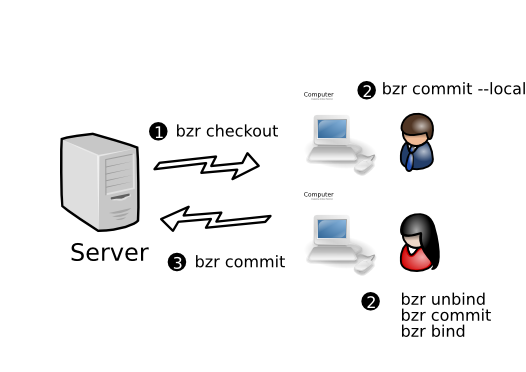

Working offline on a central branch¶
The centralized with local commits workflow¶
If you lose your network connection because you are travelling, the central server goes down, or you simply want to snapshot changes locally without publishing them centrally just yet, this workflow is for you.
Committing locally¶
If you’re working in a checkout and need/wish to commit locally only,
add the --local option to the commit command like this:
brz commit --local
Being disconnected for long time periods¶
If you will be or want to be disconnected from the bound branch for
a while, then remembering to add --local to every commit command
can be annoying. An alternative is to use the unbind command to
make the checkout temporarily into a normal branch followed by the
bind command at some later point in time when you want to
keep in lockstep again.
Note that the bind command remembers where you were bound to
last time this branch was a checkout so it isn’t necessary to enter
the URL of the remote branch when you use bind after an earlier
unbind.
Merging a series of local commits¶
When you make commits locally independent of ongoing development
on a central branch, then Breezy treats these as two lines of
development next time you update. In this case, update
does the following:
it brings the latest revisions from the bound branch down and makes that the mainline of development within your checkout
it moves your local changes since you last updated into a logical parallel branch
it merges these together so that your local changes are reported as a pending merge by
status.
As always, you will need to run commit after this to send your
work to the central branch.